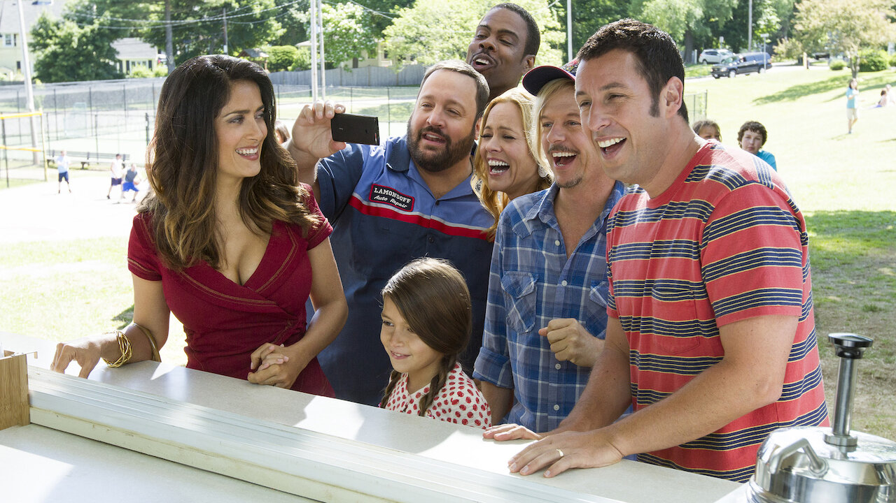
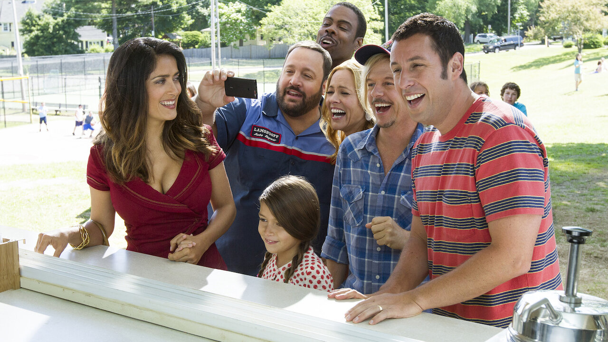

| Pelicula | SON COMO NIÑOS |
|---|---|
| Director | Dennis Dugan |
| Descripción |
La muerte de su entrenador de baloncesto durante su infancia provoca la reunión de algunos viejos amigos,
quienes se ven en el lugar en el que celebraron un campeonato años atrás. Los compañeros hablan sobre sus esposas y sus hijos, y descubren que la edad no necesariamente va de la mano con la madurez. |
| Cronología |
Son como niños 1 (2010) Son como niños 2 (2013) |
| Imagen |
 

|